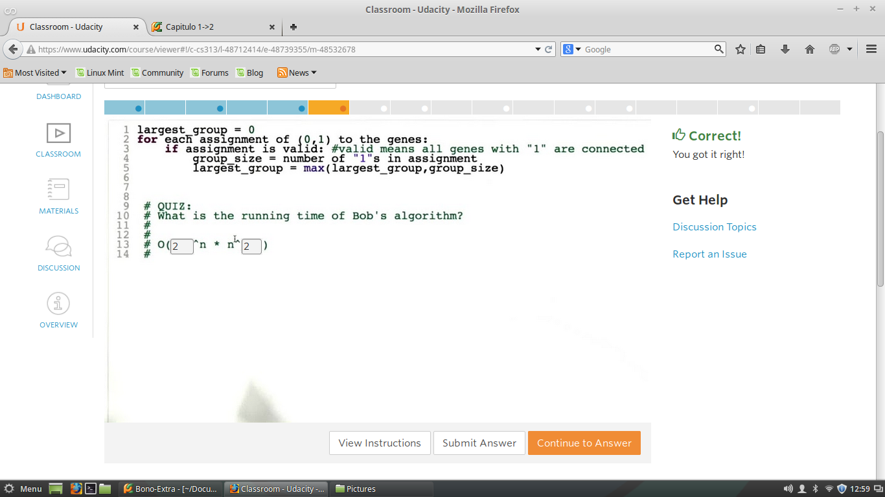

Problemas Similares de Conexiones
Quiz 1 - Algoritmo de Alice
Bueno, Ahora Analizar cual es la mejor descripcion del tiempo de ejecucion de este algoritmo.
Quiz 2 -Tiempos de Ejecucion Polinomial o Exponencial
Dadas las siguientes complejidades determinar, si es Polinomial o Exponencial cada una de las Notaciones.

Quiz 3 -Problema de Bob
Cual es el mayor Grupo de Genes esta conectado a todos los otros Genes.
Quiz 4 - Complejidad del Algoritmos de Bob
Cual es la Complejidad de Ejecucion del siguientealgoritmos de Bob

Quiz 5 - Problemas Tratables o Intratables
Podemos decir que, Si los Problemas de Alice o el de Bob, son problemas intratables
Recuerde que los algoritmos de Complejidad Exponencial son Intratables
Aunque este apartado es un poco complejo para determinarlo, por que se debe hacer ciertas demostraciones.
Pero los algoritmos de Complejidad Polinomial son Computacionalmente Tratables.
RTA: No, Claro que no se puede determinar aun debido a la simplidad de esto algoritmos pero se debe hacer una
analisis mas detallado, para asegurar tal tipo de problema.
Quiz 6 - Problemas Tratables Vs Intratables
Se Plantea una problema Tratable y otro Intratable, la idea es ver cual es facil, como lo indica la Imagen
Quiz 7 - Problema de Carol
Podemos decir que, Si los Problemas de Alice o el de Bob, son problemas intratables, por que son de Complejidad Exponencial,
ahora el problema de Carol es similar al de Bob, pero la Idea es encontar el maximo numero de items que no se encuentren conectados entre si.
En articular se presenta un caso particular.
Quiz 8 -CLique
La idea es aplicando el concepto de Grafos, Aristas y Nodos o vertices.
Indicar cual es el grupo de nodos que hace que se conecte la mayoria de nodos en un grafo dado
Dando paso a la aplicacion de Clique
Quiz 9 - Independent Set
La idea es Similar al anterior quiz, solo que busca.
Indicar cual es el maximo numero de nodos que hace que no se conecte con los otros nodos en un grafo dado
Dando paso a la aplicacion de Independent Set

Quiz 10 - Cubrir todos los Aristas
Determinar cual es minimo numero de Nodos que cubren todas las conexiones posibles en el Grafo.

NOTA: - Reduccion
Reduccion es basicamente una transformacion entre dos Problemas.
Ya se para dar con un tipo de problema de Complejidad Polinomial a Exponencial
o a la inversa.